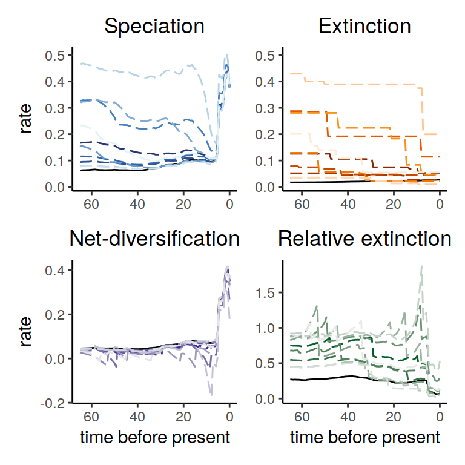

6 Exploring the congruence class
In theory there are infinitely many speciation and extinction rate functions that are within a congruence class, i.e., all rate functions that have exactly the same likelihood. It is clearly impossible to enumerate all rate functions. Instead of trying to explore literally all rate functions, we will sample from these rate functions instead. This idea is very similar to all sampling based methods. For example, a posterior distribution with a 95% credible interval between 0.01 and 0.02 contains infinitely many values, but we are we comfortable today with simply sampling values proportional to their posterior probability and looking/plotting the distribution.
6.1 Assumptions on rates
There are several plausible assumptions that can be made about diversification rates and how these rates vary. First, you could make assumptions about the magnitude of rate variation, and specifically what are plausible minimum and maximum rates. Clearly, speciation and extinction rates should not have been smaller than 0, so that could be a safe assumption.
Depending on your study system, you could also assume that rates were never larger than, say, 10 events per lineage per million years. For example, if you would have a speciation rate of 10 per lineage per million years, then you would expect every lineage to speciate on average every 0.1 million years. If there would be no extinction, then this would leave the group with just above 22,000 species after only one million years. So perhaps a rate of 10 could really be seen as an upper bound in systems such as vertebrates and plants. However, you could argue that there is extinction, and we should better restrict the net-diversification rates to be at most 10. We get into some more of these restrictions in another section.
The second assumption is about how rates vary over time. One could argue that if diversification rates were low, say 42 million years ago, then you would assume that the diversification rates were also low 43 million years ago. This would mean that diversification rates are autocorrelated and do not vary completely arbitrarily over time.
In the next subsections, we explore a few different options of rate variation over time in the next sections, which include:
- HSMRF (autocorrelated) rates
- Exponentially decreasing rates with stochastic variation
- Linearly increasing rates with stochastic variation
- Episodic constant models (with \(n\) episodes)
- Uncorrelated (independent) rates
With the built-in functions sample.basic.models and sample.rates, users have freedom to explore these, and many other forms of rate variation.
If these functions are not sufficient, as shown in previous sections, it is easy to customize the sampling to your liking.
6.2 Sample alternative extinction rates
6.2.2 Exponentially decreasing
Here, we generate a variety of alternative extinction rates using HSMRF models (Magee et al., 2020) with an exponential trend. We otherwise make the same assumptions as above. To help the rates we simulate fit within 0 and 1, we set the fold change average to be 2 instead of the default 3.
times <- seq(0, max(my_model$time), length.out = 100)
extinction_rate_samples <- function() {
sample.basic.models( times = times,
model="exponential",
max.rate=1,
fc.mean=2)
}samples <- sample.congruence.class(
my_model,
num.samples=10,
rate.type="extinction",
sample.extinction.rates=extinction_rate_samples)We can plot the samples using
Figure 6.3: Rate functions assuming exponential trends in the extinction rate
Figure 6.4: Congruence class assuming exponentially changing extinction rates
As we can see, the alternative models are not in perfect agreement about the entire history of the rates. Nonetheless, the increases and decrease near the present are preserved, indicating robustness to this form of extinction-rate variation.
6.2.3 Linearly increasing
Here, we generate a variety of alternative extinction rates using GMRF models (Magee et al., 2020) with a linear trend. Unlike the exponential section, we here assume that rates have increased, that the increase has been monotonic (there were no decreases, where in the exponential decreases above there were occasional increases), and that the stochastic variability comes from a GMRF. We otherwise make the same assumptions as above.
times <- seq(0, max(my_model$time), length.out = 100)
extinction_rate_samples <- function() {
sample.basic.models( times = times,
direction="increase",
model="linear",
monotonic=TRUE,
MRF.type="GMRF",
max.rate=1,
fc.mean=2)
}samples <- sample.congruence.class(
my_model,
num.samples=10,
rate.type="extinction",
sample.extinction.rates=extinction_rate_samples)We can plot the samples using
Figure 6.5: Congruence class assuming linearly changing extinction rates.
Figure 6.6: Congruence class assuming linearly changing extinction rates.
As we can see, the increases and decrease near the present are preserved, indicating robustness to this form of extinction-rate variation. Compared to the exponential and HSMRF models above, there is even better agreement between the alternative models.
6.2.4 Episodic
Here, we generate a variety of alternative extinction rates without stochastic noise.
Without noise (noisy=FALSE), all changes will be in the same direction, here decreases.
The model we generate is an episodic model with 5 rates.
Here, we consider decreasing rates with larger changes from past to present than the previous section.
To help rates stay within the [0,1] bounds we have chosen, we set the rate median at present to be slightly smaller than the default 0.1.
times <- seq(0, max(my_model$time), length.out = 100)
extinction_rate_samples <- function() {
sample.basic.models( times = times,
direction="decrease",
model="episodic5",
noisy=FALSE,
max.rate=1,
fc.mean=4,
rate0.median=0.05)
}samples <- sample.congruence.class(
my_model,
num.samples=10,
rate.type="extinction",
sample.extinction.rates=extinction_rate_samples)We can plot the samples using

Figure 6.7: Congruence class assuming episodically changing extinction rates.
As we can see, the increases and decrease near the present are preserved, indicating robustness to this form of extinction-rate variation. The agreement between the alternative models is comparable to the linear scenarios above, and higher than for the exponential and HSMRF models.
6.2.5 Uniform independent
The previous functions used sample.basic.models to construct a variety of pre-defined hypotheses.
CRABS also implements sample.rates to allow more flexibility in user-defined rate functions (and of course the user is free to define their own functions as well).
Here we show this with IID rates.
We assume that the extinction rates could have had any value between 0 and 1 (you could easily pick different numbers here).
Our motivation for these values was, that (i) having a maximal expected extinction time per lineage of 1.0 million years seems reasonable from the fossil record, and (ii) we estimated a maximal speciation rate of 0.4, which is clearly smaller than 1.0.
We furthermore assume that each extinction rate is independent of the previous time interval. That means that we can model any rate function, even completely crazy zig-zagging functions.
coarse_times <- seq(0, max(my_model$time), length.out = 10)
rsample_extinction <- function(n) runif(n,0,1)
extinction_rate_samples <- function() {
sample.rates( times = coarse_times,
rsample=rsample_extinction,
rsample0=NULL,
autocorrelated=FALSE)
}samples <- sample.congruence.class(
my_model,
num.samples=10,
rate.type="extinction",
sample.extinction.rates=extinction_rate_samples)We can plot the samples to inspect them visually
Figure 6.8: Rate functions for the congruence class with proposed alternative extinction rates whose values are drawn from an independent uniform distribution for each episode.
Next we can plot the directional trends
Figure 6.9: Congruence class assuming independent and uniformly distributed extinction rates.
As we can see, the alternative models present many distinct histories of the rates through time. Nonetheless, even in this extreme scenario, the increases and decrease near the present are preserved.
6.2.6 Brownian motion with a trend
It is also possible to specify fully customized rate sampling functions, and use these to sample the congruence class in CRABS. Suppose we thought that the extinction rate was tiny when the clade emerged, but steadily rose in a linear fashion towards the present. Additionally, suppose we allow for some random variation around this linear increase. This can be implemented as a Brownian motion with a trend, as follows.
med_times <- seq(0, max(my_model$time), length.out = 30)
extinction_rate_samples <- function(){
noise <- cumsum(rnorm(30, mean = 0, sd = 0.03))
y <- -0.008*med_times + noise + 0.6
y <- ifelse(y < 0.001, 0.001, y)
f <- approxfun(med_times, y)
}For simplicity, we restrict rates that are very small or negative to be a minimum of 0.001 units. As before, we can use CRABS to sample from the congruence class using this form of proposed extinction rates, and plot the rates:
samples <- sample.congruence.class(
my_model,
num.samples=15,
rate.type="extinction",
sample.extinction.rates=extinction_rate_samples)
plot(samples)Figure 6.10: Rate plots for the congruent models that were sampled assuming an extinction rate modeled as a Brownian motion with a linearly increasing trend
The summary of trends across these models contain quite a bit of variation. However, the three main signals in the primate reference model are all recovered: two increases and one decrease in the recent part of the phylogeny 6.11.
Figure 6.11: A summary of directional trends through time across the congruent models. The proposed extinction rate is modeled as a Brownian motion with a trend that increases linearly towards the present.